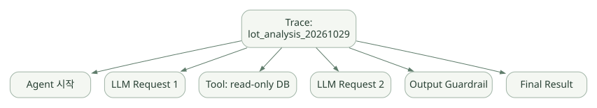

구현과 운영 / 단원 07
결과 검증과 장기 작업의 조건
Trace와 Evaluation, 형식과 사실, 기본 Agent와 확장
먼저 연결해 보기
Trace는 실행 경로를 남기고 Evaluation은 결과와 행동을 기준에 비교합니다. 기록이 많다고 정확성이 증명되는 것은 아니며, 민감정보의 저장·외부 전송 정책도 함께 설계해야 합니다.
Structured Output은 결과를 검증하기 좋은 구조로 만들지만 사실과 계산을 보장하지 않습니다. Sandbox의 파일·Skills·Memory 기능은 일반 Agent의 Session과 별도로 보고, 실제 격리와 재개 조건을 확인하세요.
읽는 관점형식 검증과 업무 검증, 실행 기록과 품질 평가, 일반 Agent와 Sandbox 확장을 구분하세요.
16. Tracing, Observability, Evaluation#
16.1 Trace와 Span#
Trace는 사용자 작업 전체를 기록하는 상위 단위, Span은 LLM 호출·Tool 실행·Handoff·Guardrail 등 각 작업을 나타내는 하위 단위다. 공식 SDK는 tracing을 기본 활성화할 수 있으며, 환경변수 OPENAI_AGENTS_DISABLE_TRACING=1, 코드 set_tracing_disabled(True), RunConfig 설정 등으로 비활성화할 수 있다. [S18]
넓은 도식은 가로로 이동하며 읽을 수 있습니다. 도식 크게 보기 ↗

원문에 수록된 학습용 도식입니다. 노드·화살표·분기 라벨을 보존해 다시 배치했습니다. 세부 조건과 예시·구현의 구분은 앞뒤 본문을 함께 읽으세요.
도식 원문 보기 (Mermaid)
flowchart TD
TR[Trace: lot_analysis_20261029] --> S1[Agent 시작]
TR --> S2[LLM Request 1]
TR --> S3[Tool: read-only DB]
TR --> S4[LLM Request 2]
TR --> S5[Output Guardrail]
TR --> S6[Final Result]16.2 반도체 데이터의 관측 주의사항#
Tracing을 켜면 입력 프롬프트·Tool 인자·응답·오류 메시지 등의 민감한 내용이 관측 시스템에 포함될 수 있다. 외부 Trace 전송이 허용되는지, 기록되는 필드·보존기간·접근 권한·데이터 마스킹 정책을 우선 검토해야 한다. 추적이 전혀 없다면 사고 원인 분석·비용 통제가 어려우므로, 필요하다면 내부 전송 대상/프로세서 커스터마이징을 검토한다. [S18]
16.3 Trace ≠ Evaluation#
- Tracing: 어떤 모델·Tool이 어떤 순서로 작동했는지 기록.
- Evaluation: 정답·근거·업무 기준에 비교하여 품질을 측정.
- Monitoring: 장기간 오류율·지연·사용량·정책 위반 추세를 수집.
반도체 Agent라면 SQL 허용 여부, 조회된 데이터 버전, 실제 KPI 계산 정확성, 인용한 문서와 답변 일치, 근거 없는 원인 단정 비율을 별도 평가해야 한다.
16.4 평가 데이터셋 예시#
| 항목 | 평가 질문 | 측정 지표 |
|---|---|---|
| 데이터 접근 | 권한 없는 FAB 조회를 막았나? | 차단율, 정보 노출 건수 |
| Tool 선택 | 올바른 DB 조회 도구를 선택했나? | Tool 선택 정확도 |
| 집계 | 수율·불량률 산식을 정확히 적용했나? | 정확도, 허용 오차 |
| 근거 | 원문·계산 결과의 근거를 제시했나? | 근거 적합률 |
| 사용자 UX | 모호한 질문에서 추가 조건을 요구했나? | 누락 조건 비율 |
| 운영 | 실패 후 안전하게 복구했나? | 복구 성공률, 중복 실행 비율 |
| 비용 | 요청당 모델/API 비용은? | 토큰, 도구 호출 수, 95p 지연 |
17. Structured Output과 실패·재시도·비용 통제#
17.1 Output Schema는 왜 중요한가?#
자연어 답변은 사람이 읽기 좋지만 시스템 연동에는 형식이 불안정하다. output_type=BaseModel로 구조화된 결과를 요구하면 다음 단계가 필드를 직접 검증하기 쉽다.
from pydantic import BaseModel, Field
from agents import Agent
class ProcessFinding(BaseModel):
issue: str
evidence_ids: list[str] = Field(default_factory=list)
hypotheses: list[str] = Field(default_factory=list)
confidence_level: str = Field(description="high/medium/low 중 하나로 사용하도록 설계")
agent = Agent(name="EvidenceAnalyzer", output_type=ProcessFinding)주의: Field(description=...)은 범위 검증이 아니다. 선택지를 강제하려면 Literal['high','medium','low'] 또는 enum을 쓰자. 모델의 'confidence'는 반드시 통계적으로 보정된 확률을 의미하지 않는다. [S02], [S17]
17.2 Tool 파싱 검증과 Output 검증의 차이#
- Tool 인자 검증: 모델이 요청한 Python 함수의 입력 인자가 올바른가?
- 최종 출력 스키마 검증: Agent의 답변이 지정된 자료형/구조에 맞는가?
- 업무 검증: 결과가 사실이며 허용 가능한 수치와 증거를 갖는가? → 별도 검증 함수·도메인 규칙·테스트가 필요.
17.3 실패 유형별 대책#
| 실패 | 예상되는 결과 | 대응 |
|---|---|---|
| 모델 API 실패/timeout | 호출 실패 또는 재시도 | 호출별 timeout·지원 retry policy |
| 모델의 잘못된 Tool 이름 | 행동 실패·Behavior Error 가능 | Tool 목록/호환성 검증 |
| 잘못된 JSON 인자 | 스키마/파싱 오류 | Tool 검증·실패 메시지 정책 |
| Tool 내부 Exception | 모델에 오류로 반환 또는 run 실패 | failure_error_function, 코드 예외 처리 |
| Tool timeout | 시간 초과 결과 또는 예외 | 도구별 timeout·업무 deadline |
| Guardrail Tripwire | 실행 중단/예외 | 사유 로깅, 사용자 안내, 보존 정책 |
| Max Turns 초과 | MaxTurnsExceeded |
Tool 오용 분석, 최대 턴·예산 설정 |
| 승인 중단 | interruptions 반환 |
서버 저장·권한 승인·재개 |
| 외부 부작용 후 응답 유실 | 중복 변경 위험 | 멱등성 키·외부 상태 대조 |
일부 재시도 정책과 model-call timeout은 SDK 기능으로 제공되지만, 모든 Tool 호출에 무조건 안전한 재시도를 자동으로 적용한다고 가정하면 안 된다. [S03], [S04], [S10]
18. Sandbox Agents, Skills, Memory, 장기 실행 확장#
18.1 일반 Agent와 Sandbox Agent를 분리해서 이해#
이전 세대의 OpenAI Agents SDK 소개는 주로 Agent + Runner + Function Tool에 초점을 맞춘다. 그러나 v0.24.0 기준 Sandbox Agent 기능을 별도 주제로 포함해야 정확하다. 공식 SDK는 파일·작업 공간을 갖는 격리된 작업을 위한 Sandbox Agent 관련 기능을 제공한다. [S01], [S23]
| 관심사 | 일반 Agent 중심 개발 |
Sandbox Agent 확장 관점 |
|---|---|---|
| 주요 작업 | API/DB/함수 중심의 업무 분석 | 파일·코드·쉘·장기 작업 중심 |
| 작업 공간 | 개발자가 직접 설계 | Sandbox 및 workspace 추상화 |
| Skills | 직접 Tool/Prompt로 구현 가능 | Sandbox의 Skills capability 등 검토 |
| Memory | Session + 외부 저장소 | 별도 Sandbox Memory 기능 검토 |
| 재개 | RunState 및 앱 저장 설계 | Sandbox 세션·스냅샷 관련 기능 |
| 보안 경계 | 앱 권한 및 Tool 실행 통제 | 실행 환경 격리·마운트·권한 추가 검토 |
18.2 반드시 조사할 Sandbox 요소#
SandboxAgent와 일반Agent의 차이, 런타임 준비 과정.- Workspace: 어떤 파일이 준비되고 어떤 파일이 외부 시스템으로 반영되는가?
- Sandbox Client: 로컬·컨테이너·원격 제공자 선택, 격리 수준과 API 자격 증명.
- Skills: 문서·작업 절차를 언제 노출하고 실행하는가? 동적 로딩 및 권한 경계.
- Memory: 세션 정보와 반복 작업에서 얻은 교훈이 어디에 저장되고 언제 적용되는가?
- Resume/Snapshot: 중단 후 재개가 파일·도구 측 부작용을 어떻게 다루는가?
- Compaction: 장기 실행에서 컨텍스트 정보 손실을 어떤 규칙으로 관리하는가?
18.3 반도체 환경에서 판단할 점#
Sandbox에서 Python을 실행할 수 있다는 사실만으로 생산망 안전성이 확보되는 것은 아니다. 읽기 전용 데이터 마운트, 외부 인터넷 egress 차단, 키 접근 분리, 로컬 파일 보존 정책, 결과물 승인 전 외부 반출 제한이 필요하다. 샌드박스 격리와 플랫폼의 정책은 설치 옵션·실행 방식·인프라 구성에 따라 달라질 수 있으므로 검증 없이 '완전 격리'라고 표현하지 않는다.
18.4 범위 밖 또는 우선순위 낮은 기능#
SDK에는 Realtime Voice Agent, Voice Pipeline, 기타 모델별 기능도 있지만 반도체 도메인에서 먼저 구축할 텍스트·표·코드 분석 데모의 핵심은 아니다. 존재 여부는 파악하되, 학습 우선순위는 Tool·상태·보안·평가·데이터 근거에 둔다. [S01]
분석 방식: 공개 저장소
openai/openai-agents-python의v0.24.0태그에 포함된 모듈을 기준으로 핵심 흐름을 연결한다. 정확한 코드는 해당 GitHub 링크에서 확인한다. 아래의 의사코드가 실제 함수 본문과 줄 단위로 일치한다는 뜻은 아니다. 모든 함수가 public API인 것은 아니며, 내부 구현을 직접 import하여 제품 코드를 작성하는 것은 권장하지 않는다.